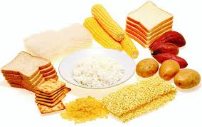

ZAT MAKANAN

Karbohidrat
Karbohidrat merupakan sumber kalori utama bagi tubuh kita karena 80% dari kalori yang diperlukan tubuh berasal dari karbohidrat. Sebagai penghasil energi setiap satu gram karbohidrat menghasilkan 4,1 kalori. Karbohidrat tersusun atas unsur-unsur karbon (C), hidrogen (H), dan oksigen (O). Sumber utama karbohidrat adalah beras, jagung, sagu, gandum, singkong, ubi, kentang, talas, dan gula.
Karbohidrat dapat dikelompokkan menjadi 3 macam, yaitu:
Monosakarida, adalah karbohidrat yang terdiri atas satu molekul gula dan merupakan karbohidrat yang paling sederhana. Contoh: glukosa dan fruktosa.
Disakarida, adalah karbohidrat yang terdiri atas dua molekul gula atau terdiri atas dua unit monosakarida. Contoh: sukrosa/gula putih (gabungan glukosa dan fruktosa), maltosa (gabungan glukosa dan glukosa), dan laktosa (gabungan glukosa dan galaktosa).
Polisakarida, adalah karbohidrat yang terdiri atas banyak gugus gula atau terdiri atas banyak unit monosakrida. Contoh: pati ( amilum), glikogen (gula otot), dan selulosa (pembentuk dinding sel tumbuhan). Karbohidrat yang diserap oleh tubuh manusia berbentuk monosakarida. Salah satu monosakarida adalah glukosa. Di dalam hati, sebagian glukosa diubah menjadi glikogen untuk disimpan.
Fungsi karbohidrat:
– Sumber energi.
– Menjaga keseimbangan asam basa di dalam tubuh.
– Berperan penting dalam proses metabolisme di dalam tubuh.
– Pembentuk struktur sel dengan mengikat protein dan lemak